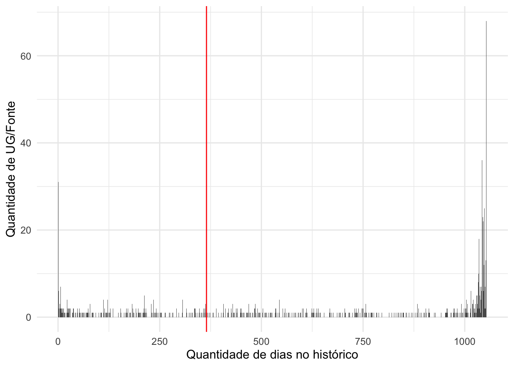
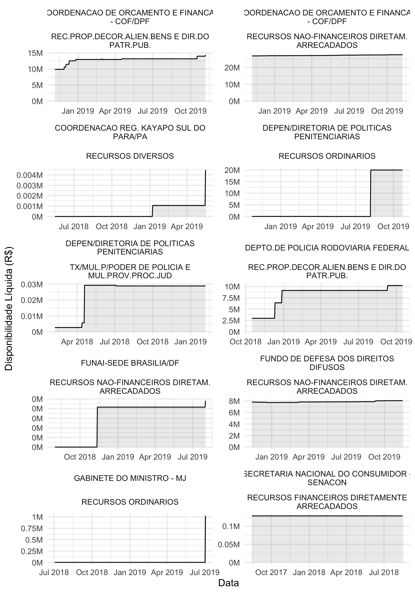
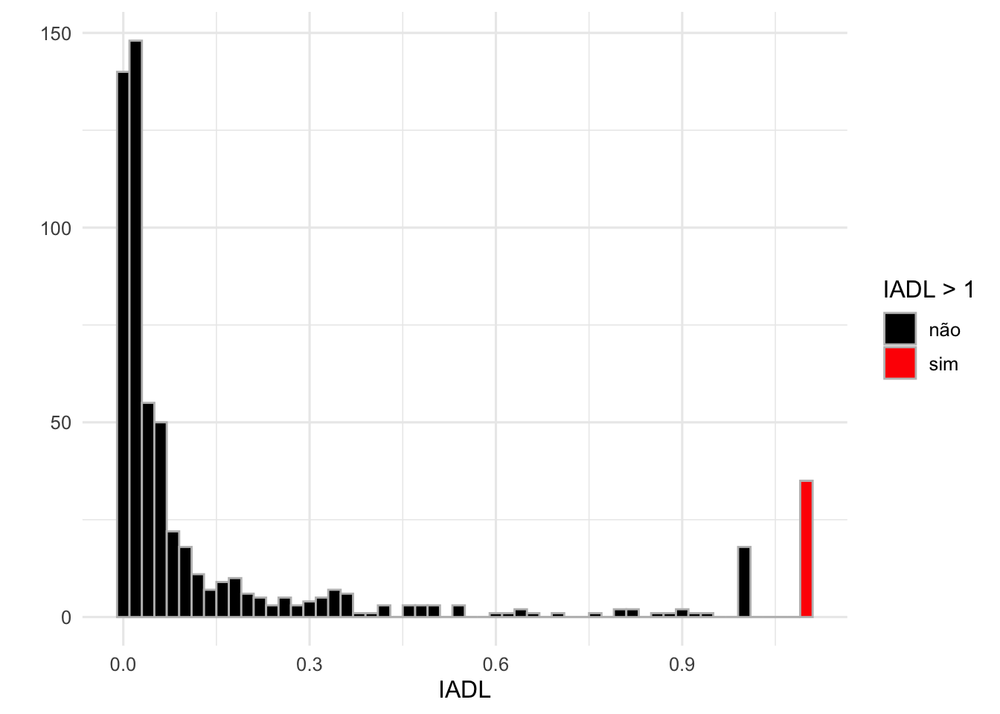
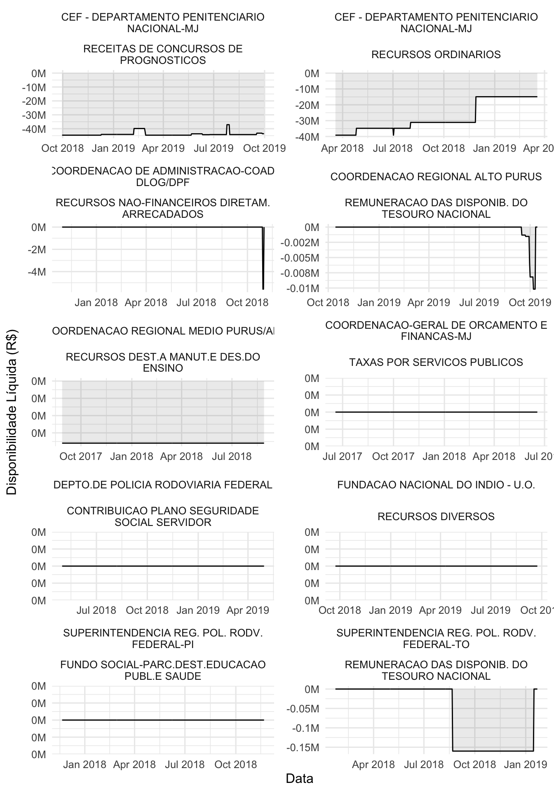
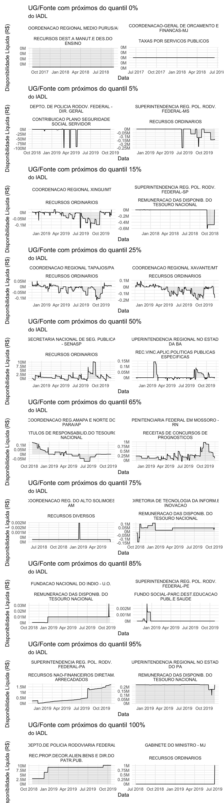
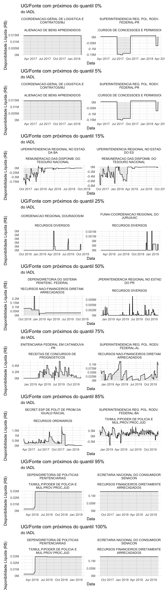
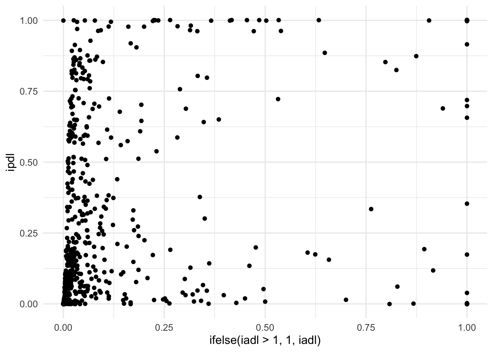
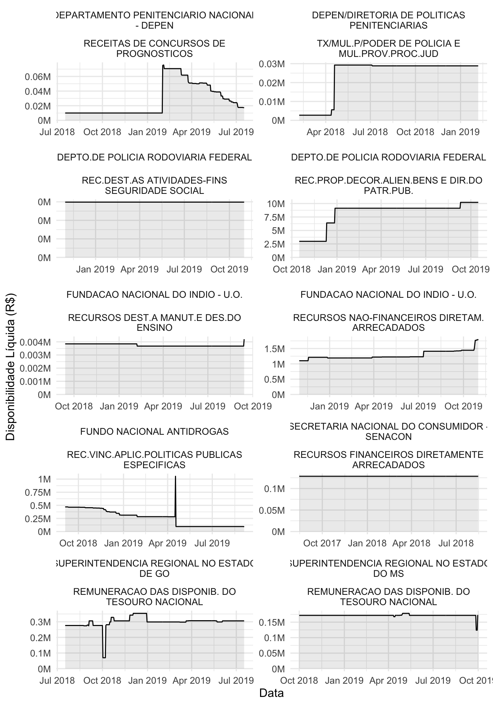

Capítulo 4 Índices de empoçamento
No capítulo anterior identificamos o que é empoçamento e quais são os seus principais tipos. Neste capítulo vamos apresentar e avaliar indicadores que permitem:
- Quantificar o empoçamento
- Classificar quanto ao tipo de empoçamento
Os índices desenvolvidos pretendem capturar as principais características da série de disponibilidade líquida que caracterizam algum tipo de empoçamento.
Os índices foram calculados por janelas de 1 ano, isto é, para cada data disponível no banco de dados foram considerados dados dos 365 dias anteriores para o cálculo do índice. Calcular os índices desta forma permite:
- Comparar o índice de UG/Fontes que não possuem o mesmo histórico
- Avalliar a evolução dos indicadores com o tempo
Para os casos em que queremos avaliar as UG’s/FONTE sem observar o efeito do tempo consideramos a média do índice em todos os instantes do tempo em que foi calculado.
Também é importante notar que algumas UG/FONTE possuem histórico pequeno para ser analisado de formar estatística, e por isso, foram excluidas das análises a seguir. Para decidir quais seriam analisadas fizemos gráfico a seguir que mostra a quantidade de UG’s para cada quantidade de dias com hisórico.

Como boa parte das UG/Fonte possuem todo o histórico, optamos por pegar apenas aquelas que possuem pelo menos 1 ano de histórico, de forma a obter estimativas mais robustas. Com a exclusão de algumas combinações passamos de 856 para 601 combinações de UG e Fonte de recurso.
4.1 Índice acumulação de disponibilidade líquida
Esse índice representa o quanto o valor de disponibilidade líquida positiva foi maior em média do que total de débitos em 1 ano. Em outras palavras, podemos dizer que quando este índice é próximo de 0 significa que sua disponibilidade líquida média sempre foi muito menor do que os seus pagamentos. Quando ele é próximo de 1, indica que a disponibilidade líquida média foi sempre parecida com todos os gastos de 1 ano.
4.1.1 Cálculo
O cálculo do índice é descrito da seguinte maneira:
\[IADL_i = \frac{\hat{dl_i}}{\hat{d_i}}\] Em que \(dl_i\) é a disponibilidade líquida no dia \(i\) e \(d_i\) é o débito no dia \(i\)
\[\hat{dl_i} = \frac{1}{365}\sum_{i=1}^{365}dl_{-i}\]
\[\hat{d_i} = \sum_{i=1}^{365} d_{-i}\]
4.1.2 Distribuição
Uma vez que o índice é calculado em janelas de 1 ano, quando mostrarmos a distribuição por UG, iremos avaliar apenas o valor do índice no último dia em que foi possível calculá-lo para aquela combinação UG/Fonte. Isso pode não ser exatamente o último dia de histórico da base de dados pois uma combinação UG/Fonte pode parar de existir ao longo do tempo.
Note que estamos avaliando a combinação UG/FONTE o que totaliza 601 no banco de dados analisado.
4.1.2.1 IADL maior do que 1
Em primeiro lugar avaliamos aquelas combinações UG e Fonte que possuem IADL mairo do que 1. O índice ser maior do que 1 significa que a disponibilidade líquida média diária foi maior do que tudo que foi gasto durante o ano inteiro. Em geral, quando o IADL é maior do que 1, é por que nenhuma despesa aconteceu durante ano e aquela combinação possuia disponibilidade líquida positiva.
| iadl > 1 | n |
|---|---|
| não | 566 |
| sim | 35 |
No gráfico abaixo é possível visualizar as 10 combinações com maiores valores do IADL.

Veja que esses casos são os mais clássicos de empoçamento pois existe disponibilidade líquida positiva e nenhum gasto. Esses são casos anteriormente chamamos de empoçamento total.
Esses podem não ser os casos interessantes de empoçamento mas, nas próximas análises vamos combinar este índice com a disponibilidade líquida média diária para poder encontrar empoçamentos com valores mais altos.
4.1.2.2 Distribuição do IADL
No gráfico abaixo podemos visualizar um historama da distribuição do IADL. Cada barra mostra a quantidade de combinações UG e Fonte que possuem aquele valor do IADL. Podemos verificar que a maioria das combinações possui valor do IADL muito ptóximo de 0.

4.1.2.3 IADL próximo de zero
Vamos observar agora alguns exemplos de combinações que possuem IADL bem próximo de zero. Lembre-se que próximo de zero significa que não há empoçamento.

Mais uma vez esses podem não ser os casos mais interessantes de empoçamento, pois, são aqueles em que a disponibilidade líquida é negativa durante todo período. No entanto, isso mostra que o indicador consegue capturar quando não existe empoçamento.
4.1.2.4 Mais exemplos
O gráfico a seguir mostra exemplos de combinações UG/Fonte que estão próximas de cada quantil da distribuição do IADL. Podemos verificar por esse gráfico que o IADL parece ser uma medida razoável para quantificar o empoçamento.
 Com as análises anteriores mostramos que o IADL parece ser uma medida razoável para quantificar o empoçamento. A seguir vamos apresentar um indicador que será útil para a classificação do tipo de empoçamento.
4.1.2.5 Classificação
De acordo com as análises anteriores sugerimos a seguinte classificação para uma combinação UG/Fonte com base em seu valor do IADL.
- SEM EMPOÇAMENTO: IADL < 0.02
- EMPOÇAMENTO MODERADO: IADL entre 0.02 e 0.8
- EMPOÇAMENTO ALTO: IADL > 0.8
A tabela a seguir apresenta a quantidade de combinações UG/Fonte em cada uma das categorias.
| Categoria IADL | # |
|---|---|
| 1. Sem empoçamento | 226 |
| 2. Empoçamento moderado | 313 |
| 3. Empoçamento alto | 62 |
4.2 Indicador de persistência de saldo positivo
Este indicadore representa a proporção de dias no ano que uma combinação UG/Fonte teve disponibilidade líquida suficientemente positiva. A definição suficientemente positiva foi calculada com base na média diária de débitos. Portanto, se a disponibilidade líquida for maior que a média ddiária de débitos consideramos que a disponibilidade é suficientemente positiva.
4.2.1 Cálculo
\[IPDL_i = \frac{1}{n}\sum_{i=i}^{365}(dl_{-i} > d_{-i})\]
Em que \(dl_i\) é a disponibilaidade líquida no dia \(i\) e \(d_i\) é o valor debitado no dia \(i\).
4.2.2 Distribuição
Abaixo temoos um histograma da distribuição do IPDL Podemos ver que a distribuição tem concentrações nas extremidades - muitas combinações UG/Fonte possuem IPDL igual a zero e muitas igual a um.

4.2.2.1 IDLP igual a zero
Em seguida vamos avaliar alguns exemplos de combinações UG/Fonte que possuem o IPDL igual a zero. Isso vai nos ajudar a verificar se o índice está fazendo sentido para indicar empoçamento.
Quando o IPDL é igual zero, isso significa que a combinação UG/Fonte não teve nehum dia com a disponibilidade suficientemente positiva, portanto essas combinações não devem ter sinais de empoçamento.

De fato é isso que observamos no gráfico acima.
4.2.2.2 IPDL igual a um
Agora vamos avaliar combinações que possuem o IPDL igual a um. Essas combinações ficaram o ano inteiro com o IPDL suficientemente positivo, portanto devem ter sinais de empoçamento.

Veja que, no gráfico todas as combinações apresentam sinais de empoçamento total. Isso significa que o índice está conseguindo capturar bem o empoçamento. O IPDL, porém, não indica a intensidade do empoçamento no sentido de valor nominal.
4.2.2.3 Mais exemplos
No gráfico abaixo visualizamos diversos exemplos de combinações UG/Fonte que possuem IPDL próximos de alguns quantis. Esse gráfico é útil p/ visualizarmos o comportamento das séries dependendo dos valores do IPDL.
Podemos notar que entre os quantis 25% e 75% os comportamentos das séries parecem com o comportamento daquelas com o que chamamos de empoçamento temporário. A partir do 75% até o 85% encontramos comportamentos mais parecidos com o que chamamos de empoçamento natural e a partir daí observamos o empoçamento total. Isso mostra que esse indicador captura características importantes para classificar os tipos de empoçamento.
4.2.2.4 Classificação
Com base nas análises anteriores conseguimos criar classificações para as combinações UG/Fonte de acordo com o valor do índice IPDL. As classificações foram:
- SEM EMPOÇAMENTO: IPDL < 0.02
- EMPOÇAMENTO TEMPORÁRIO: IPDL entre 0.02 e 0.8
- EMPOÇAMENTO NATURAL: IPDL entre 0.8 e 0.9
- EMPOÇAMENTO TOTAL: IPDL > 0.9
A tabela a seguir apresenta a quantidade de combinações UG/Fonte em cada uma das categorias.
| Categoria IPDL | # |
|---|---|
| 1. Sem empoçamento | 156 |
| 2. Empoçamento temporário | 348 |
| 3. Empoçamento natural | 30 |
| 4. Empoçamento total | 67 |